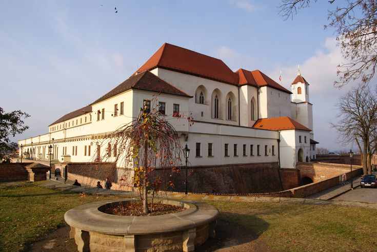
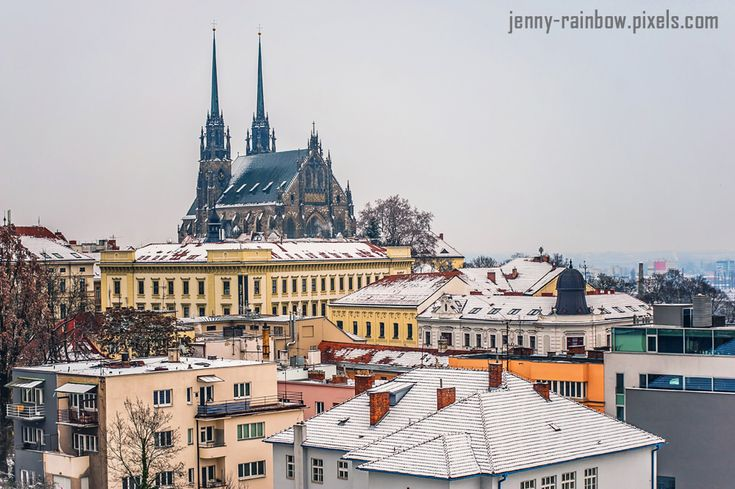
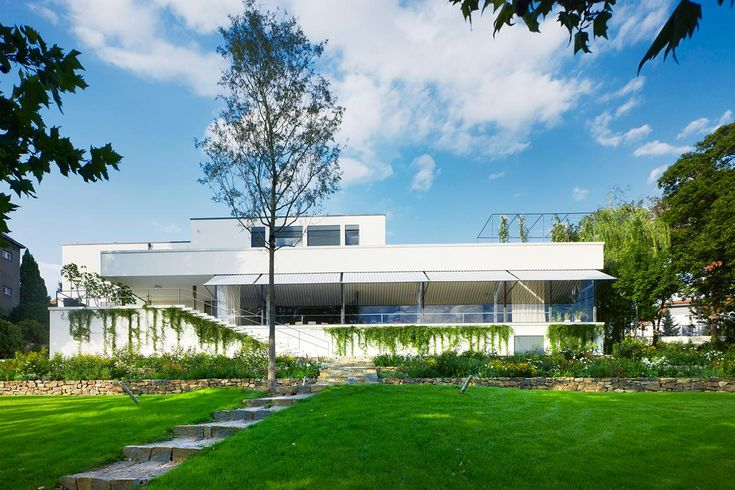
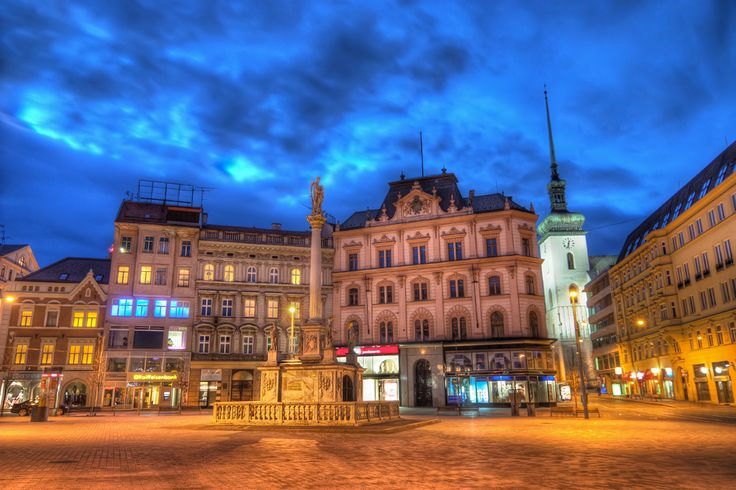
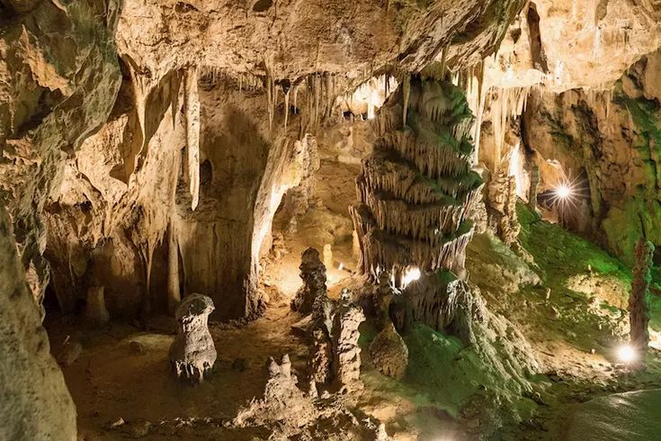

Špilberk Castle
A historic castle offering panoramic views of the city.

Cathedral of St. Peter and Paul
A stunning Gothic cathedral located on Petrov Hill.

Villa Tugendhat
A UNESCO World Heritage Site and an iconic example of modern architecture.

Brno Underground
A network of tunnels and cellars beneath the city, including the Capuchin Crypt.

Freedom Square
The main square in Brno, surrounded by historic buildings and cafes.

Moravian Karst
A beautiful natural area with caves and hiking trails located just outside the city.